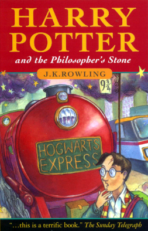
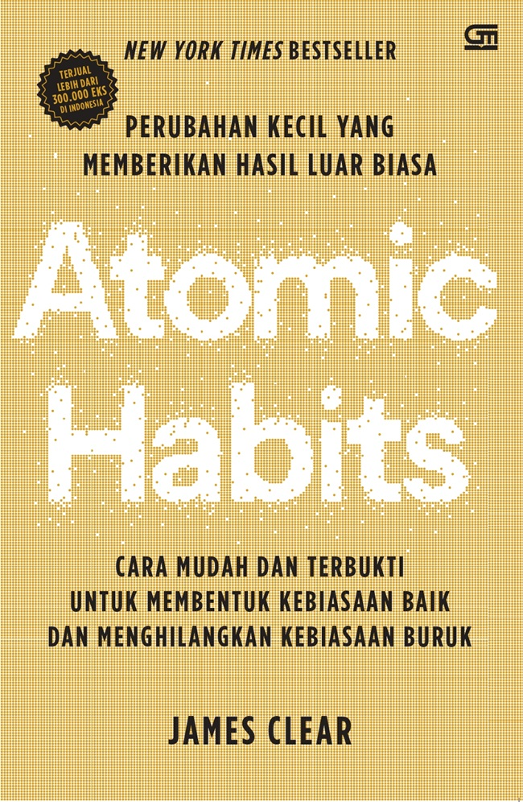
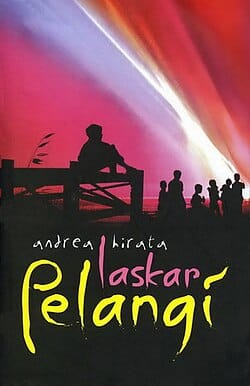
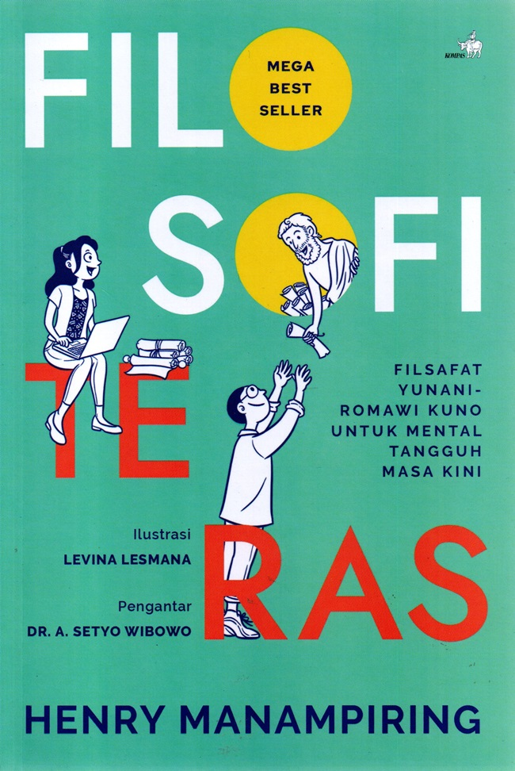
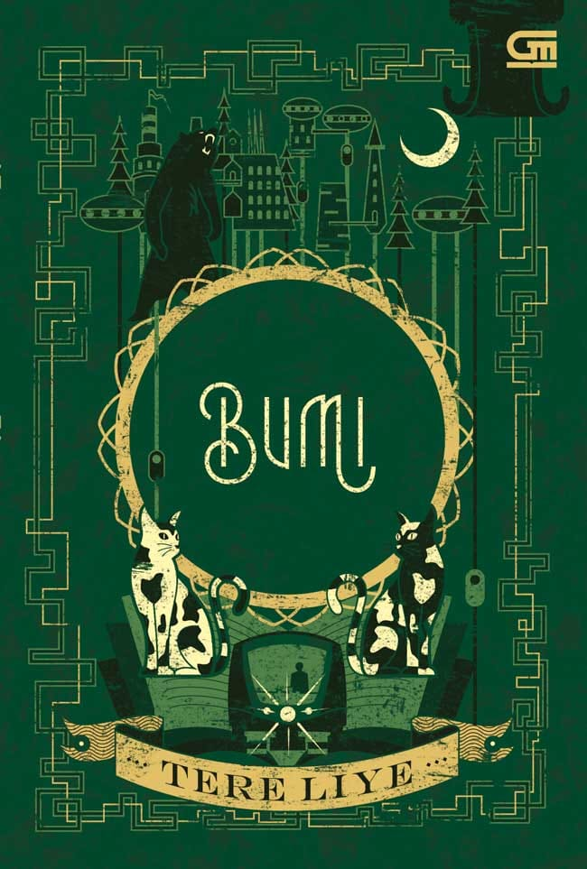

 |
Judul: Harry Potter And The Philosopher's Stone Penulis: J.K. Rowling Penerbit: Bloomsbury Tahun: 1997 |
"There is no good and evil, there is only power and those is only power and those too weak to seek it." |
 |
Judul: Atomic Habits (Non-Fiksi) Penulis: James Clear Penerbit: Avery Publishing (imprint dari Penguin Group) Tahun: 2018 |
"You do not rise to the level of your goals. You fall to the level of your systems." |
 |
Judul: Laskar Pelangi Penulis: Andrea Hirata Penerbit: Bentang Pustaka Tahun: 2005 |
"Hidup ini seperti pelangi, penuh warna, tapi tidak semua warna itu indah." |
 |
Judul: Filosofi Teras (Non-Fiksi) Penulis: Henry Manampiring Penerbit: Kompas Tahun: 2018 |
"Fokuslah pada hal-hal yang berada dalam kendalimu, dan lepaskan kekhawatiran atas hal-hal di luar kendalimu." |
 |
Judul: Bumi Penulis: Tere Liye Penerbit: Gramedia Pustaka Utama Tahun: 2014 |
"Kadang kita harus melewati hal-hal yang tidak kita mengerti untuk menjadi lebih kuat." |